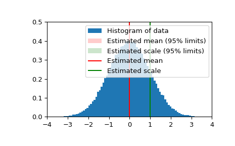

scipy.stats.bayes_mvs¶
-
scipy.stats.bayes_mvs(data, alpha=0.9)[source]¶ Bayesian confidence intervals for the mean, var, and std.
- Parameters
- dataarray_like
Input data, if multi-dimensional it is flattened to 1-D by
bayes_mvs. Requires 2 or more data points.- alphafloat, optional
Probability that the returned confidence interval contains the true parameter.
- Returns
- mean_cntr, var_cntr, std_cntrtuple
The three results are for the mean, variance and standard deviation, respectively. Each result is a tuple of the form:
(center, (lower, upper))
with center the mean of the conditional pdf of the value given the data, and (lower, upper) a confidence interval, centered on the median, containing the estimate to a probability
alpha.
See also
Notes
Each tuple of mean, variance, and standard deviation estimates represent the (center, (lower, upper)) with center the mean of the conditional pdf of the value given the data and (lower, upper) is a confidence interval centered on the median, containing the estimate to a probability
alpha.Converts data to 1-D and assumes all data has the same mean and variance. Uses Jeffrey’s prior for variance and std.
Equivalent to
tuple((x.mean(), x.interval(alpha)) for x in mvsdist(dat))References
T.E. Oliphant, “A Bayesian perspective on estimating mean, variance, and standard-deviation from data”, https://scholarsarchive.byu.edu/facpub/278, 2006.
Examples
First a basic example to demonstrate the outputs:
>>> from scipy import stats >>> data = [6, 9, 12, 7, 8, 8, 13] >>> mean, var, std = stats.bayes_mvs(data) >>> mean Mean(statistic=9.0, minmax=(7.103650222612533, 10.896349777387467)) >>> var Variance(statistic=10.0, minmax=(3.176724206..., 24.45910382...)) >>> std Std_dev(statistic=2.9724954732045084, minmax=(1.7823367265645143, 4.945614605014631))
Now we generate some normally distributed random data, and get estimates of mean and standard deviation with 95% confidence intervals for those estimates:
>>> n_samples = 100000 >>> data = stats.norm.rvs(size=n_samples) >>> res_mean, res_var, res_std = stats.bayes_mvs(data, alpha=0.95)
>>> import matplotlib.pyplot as plt >>> fig = plt.figure() >>> ax = fig.add_subplot(111) >>> ax.hist(data, bins=100, density=True, label='Histogram of data') >>> ax.vlines(res_mean.statistic, 0, 0.5, colors='r', label='Estimated mean') >>> ax.axvspan(res_mean.minmax[0],res_mean.minmax[1], facecolor='r', ... alpha=0.2, label=r'Estimated mean (95% limits)') >>> ax.vlines(res_std.statistic, 0, 0.5, colors='g', label='Estimated scale') >>> ax.axvspan(res_std.minmax[0],res_std.minmax[1], facecolor='g', alpha=0.2, ... label=r'Estimated scale (95% limits)')
>>> ax.legend(fontsize=10) >>> ax.set_xlim([-4, 4]) >>> ax.set_ylim([0, 0.5]) >>> plt.show()
